Armature, scudi e accessori
Armature, scudi e accessori in Valheim – 148 oggetti con bioma, provenienza, strumento necessario, ricetta e utilizzo.
Nessun oggetto trovato.
 Abito blu con perline
Abito blu con perline
Un abito blu con perline e bronzo.
Come ottenerlo
- Comprare: Hildir · 550 monete · dopo aver riportato Forziere di bronzo di Hildir
 Abito blu con sciarpa
Abito blu con sciarpa
Un abito blu con una sciarpa calda.
Come ottenerlo
- Comprare: Hildir · 450 monete · dopo aver riportato Forziere d'argento di Hildir
 Abito del raccolto
Abito del raccolto
Quando si lavora nei campi, è fondamentale vestirsi nel modo corretto. Questo abito lungo tiene le ginocchia coperte e protette.
Come ottenerlo
- Comprare: Hildir · 550 monete · dopo aver riportato Forziere d'ottone di Hildir
 Abito giallo con perline
Abito giallo con perline
Un abito giallo con perline e argento.
Come ottenerlo
- Comprare: Hildir · 550 monete · dopo aver riportato Forziere di bronzo di Hildir
 Abito giallo con una sciarpa calda
Abito giallo con una sciarpa calda
Un abito giallo con una sciarpa calda.
Come ottenerlo
- Comprare: Hildir · 450 monete · dopo aver riportato Forziere d'argento di Hildir
 Abito marrone con perline
Abito marrone con perline
Un abito marrone con perline e argento.
Come ottenerlo
- Comprare: Hildir · 550 monete · dopo aver riportato Forziere di bronzo di Hildir
 Abito marrone con sciarpa
Abito marrone con sciarpa
Un abito marrone con una sciarpa calda.
Come ottenerlo
- Comprare: Hildir · 450 monete · dopo aver riportato Forziere d'argento di Hildir
 Abito semplice blu
Abito semplice blu
Un abito semplice blu.
Come ottenerlo
- Comprare: Hildir · 350 monete · dopo aver riportato Forziere d'ottone di Hildir
 Abito semplice giallo
Abito semplice giallo
Un abito semplice giallo.
Come ottenerlo
- Comprare: Hildir · 350 monete · dopo aver riportato Forziere d'ottone di Hildir
 Abito semplice marrone
Abito semplice marrone
Un abito semplice marrone.
Come ottenerlo
- Comprare: Hildir · 350 monete · dopo aver riportato Forziere d'ottone di Hildir
 Abito semplice neutro
Abito semplice neutro
Un abito semplice.
Come ottenerlo
- Comprare: Hildir · 250 monete
 Armatura a scaglie di ferro
Armatura a scaglie di ferro
Una corazza di ferro, questo respingerà tutto tranne i colpi più forti.
Come ottenerlo
- Fabbricare: Forgia (livello 2) da 20 ×
 Ferro, 2 ×
Ferro, 2 ×  Pelle di cervo · per miglioramento: 5 × Ferro
Pelle di cervo · per miglioramento: 5 × Ferro
 Armatura di ossa dell'orso nefasto
Armatura di ossa dell'orso nefasto
Ricavato dalle ossa frantumate di un orso tormentato.
Come ottenerlo
- Fabbricare: Forgia (livello 2) da 4 ×
 Pelle di orso, 3 ×
Pelle di orso, 3 ×  Gabbia toracica di orso nefasto, 4 ×
Gabbia toracica di orso nefasto, 4 ×  Filo di lino · per miglioramento: 2 × Pelle di orso, 1 × Gabbia toracica di orso nefasto, 1 × Filo di lino
Filo di lino · per miglioramento: 2 × Pelle di orso, 1 × Gabbia toracica di orso nefasto, 1 × Filo di lino
 Brocchiero del nord
Brocchiero del nord
Un metodo di protezione efficace, se applicato con la dovuta competenza.
Come ottenerlo
- Fabbricare: Forgia nera (livello 4) da 10 ×
 Orosangue, 1 ×
Orosangue, 1 ×  Stampo: Brocchiero del nord, 10 ×
Stampo: Brocchiero del nord, 10 ×  Legna da costruzione · per miglioramento: 5 × Orosangue, 5 × Legna da costruzione
Legna da costruzione · per miglioramento: 5 × Orosangue, 5 × Legna da costruzione - Cuocere: Fonderia del gelo da
 Colata: Brocchiero del nord
Colata: Brocchiero del nord
 Brocchiero di bronzo
Brocchiero di bronzo
Uno scudo di bronzo brunito, buono per deviare una lama o due.
Come ottenerlo
 Brocchiero di carapace
Brocchiero di carapace
Il teschio di un cercatore è solido, ma non pesante, quindi perfetto per creare uno scudo piccolo e agile.
Come ottenerlo
- Fabbricare: Forgia nera da 16 ×
 Carapace, 3 ×
Carapace, 3 ×  Pelle squamata, 10 ×
Pelle squamata, 10 ×  Eitr raffinato · per miglioramento: 8 × Carapace, 3 × Pelle squamata, 3 × Eitr raffinato
Eitr raffinato · per miglioramento: 8 × Carapace, 3 × Pelle squamata, 3 × Eitr raffinato
 Brocchiero in ferro
Brocchiero in ferro
Grazie alla sua leggerezza e all'umbone è perfetto per deflettere gli attacchi.
Come ottenerlo
- Fabbricare: Forgia (livello 2) da 10 × Ferro, 4 ×
 Corteccia antica · per miglioramento: 5 × Ferro, 1 × Corteccia antica
Corteccia antica · per miglioramento: 5 × Ferro, 1 × Corteccia antica
 Capello di pelliccia grigio
Capello di pelliccia grigio
Un cappello di pelliccia caldo, realizzato con lana di alta qualità.
Come ottenerlo
- Comprare: Hildir · 300 monete · dopo aver riportato Forziere di bronzo di Hildir
 Cappa di Ask
Cappa di Ask
Come primo uomo di Midgard, Ask sapeva che era importante non attirare troppo l'attenzione su di sé.
Come ottenerlo
- Fabbricare: Forgia nera (livello 3) da 15 × Filo di lino, 4 ×
 Pelliccia di Lox, 10 × Pellame di cenerale · per miglioramento: 10 × Filo di lino, 2 × Pelliccia di Lox, 5 × Pellame di cenerale
Pelliccia di Lox, 10 × Pellame di cenerale · per miglioramento: 10 × Filo di lino, 2 × Pelliccia di Lox, 5 × Pellame di cenerale
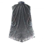
Cappa di cenereDei sottili filamenti di metallo sono intessuti in questa cappa per creare un disegno intricato, proprio come il destino tessuto dalle Norne.
Come ottenerlo
- Fabbricare: Forgia nera (livello 3) da 6 × Pellame di cenerale, 2 ×
 Tendine di Morgen, 5 ×
Tendine di Morgen, 5 ×  Fiammetal · per miglioramento: 2 × Pellame di cenerale
Fiammetal · per miglioramento: 2 × Pellame di cenerale
 Cappa di Embla
Cappa di Embla
Perfino la prima maga apprezzava l'aria mistica di un volto coperto. Si dice che onorarla in questo modo renderà i tuoi incantesimi ancora più potenti.
Come ottenerlo
- Fabbricare: Tavolo galdr (livello 2) da 16 × Filo di lino, 15 × Eitr raffinato, 2 × Pellame di cenerale · per miglioramento: 8 × Filo di lino, 5 × Eitr raffinato
 Cappa di Odino
Cappa di Odino
I migliori guerrieri di Odino meritano i capi più pregiati.
Come ottenerlo
- Fabbricare: Banco di lavoro da 10 ×
 Ritagli di cuoio, 4 ×
Ritagli di cuoio, 4 ×  Carbone · per miglioramento: 5 × Ritagli di cuoio, 2 × Carbone
Carbone · per miglioramento: 5 × Ritagli di cuoio, 2 × Carbone
 Cappa di pelle di cervo
Cappa di pelle di cervo
Classe rustica.
Come ottenerlo
- Fabbricare: Banco di lavoro (livello 2) da 4 × Pelle di cervo, 5 ×
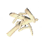
Frammenti di ossa · per miglioramento: 4 ×Pelle di cervo, 5 × Frammenti di ossa
 Cappa di pelle di troll
Cappa di pelle di troll
La pelle di Troll è resistente e flessibile.
Come ottenerlo
- Fabbricare: Banco di lavoro (livello 2) da 10 ×
 Pelle di troll, 10 × Frammenti di ossa · per miglioramento: 5 × Pelle di troll, 5 × Frammenti di ossa
Pelle di troll, 10 × Frammenti di ossa · per miglioramento: 5 × Pelle di troll, 5 × Frammenti di ossa
 Cappellino celebrativo
Cappellino celebrativo
Non puoi fare a meno di sentirti felice quando indossi questo cappellino!
Come ottenerlo
- Fabbricare: Banco di lavoro (livello 2) da 2 × Pelle di cervo, 1 ×
 Bronzo, 1 × Pelle di orso, 1 ×
Bronzo, 1 × Pelle di orso, 1 ×  Perla d'ambra · per miglioramento: 1 × Pelle di cervo, 1 × Bronzo
Perla d'ambra · per miglioramento: 1 × Pelle di cervo, 1 × Bronzo
 Cappello arancione stravagante
Cappello arancione stravagante
Un cappello arancione stravagante.
Come ottenerlo
- Comprare: Hildir · 300 monete · dopo aver riportato Forziere di bronzo di Hildir
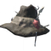
Cappello da pescaQuesto cappello decorato con tanti ami può essere ottenuto solo dagli avventurieri più esperti.
Come ottenerlo
- Fabbricare: Banco di lavoro da 1 ×
 Pesce persico, 1 ×
Pesce persico, 1 ×  Luccio, 1 ×
Luccio, 1 ×  Tonno, 1 ×
Tonno, 1 ×  Tetra, 1 ×
Tetra, 1 ×  Pesce troll, 1 ×
Pesce troll, 1 ×  Aringa gigante, 1 ×
Aringa gigante, 1 ×  Cernia, 1 ×
Cernia, 1 ×  Cernia dei coralli, 1 ×
Cernia dei coralli, 1 ×  Luccio, 1 ×
Luccio, 1 ×  Salmone dell'Atlantico, 1 ×
Salmone dell'Atlantico, 1 ×  Pesce lava, 1 ×
Pesce lava, 1 ×  Pesce palla · per miglioramento: 1 × Pesce persico, 1 × Luccio, 1 × Tonno, 1 × Tetra, 1 × Pesce troll, 1 × Aringa gigante, 1 × Cernia, 1 × Cernia dei coralli, 1 × Luccio, 1 × Salmone dell'Atlantico, 1 × Pesce lava, 1 × Pesce palla
Pesce palla · per miglioramento: 1 × Pesce persico, 1 × Luccio, 1 × Tonno, 1 × Tetra, 1 × Pesce troll, 1 × Aringa gigante, 1 × Cernia, 1 × Cernia dei coralli, 1 × Luccio, 1 × Salmone dell'Atlantico, 1 × Pesce lava, 1 × Pesce palla
 Cappello di paglia
Cappello di paglia
Il modo migliore per evitare insolazioni.
Come ottenerlo
- Comprare: Hildir · 300 monete · dopo aver riportato Forziere d'ottone di Hildir
 Cappello marrone di pelliccia
Cappello marrone di pelliccia
Un cappello di pelliccia caldo, realizzato con cuoio di alta qualità.
Come ottenerlo
- Comprare: Hildir · 200 monete · dopo aver riportato Forziere d'ottone di Hildir
 Cappello rosso semplice
Cappello rosso semplice
Un cappello rosso semplice ma alla moda.
Come ottenerlo
- Comprare: Hildir · 150 monete
 Cappello verde stravagante
Cappello verde stravagante
Un cappello verde stravagante.
Come ottenerlo
- Comprare: Hildir · 250 monete · dopo aver riportato Forziere d'argento di Hildir
 Cappello viola semplice
Cappello viola semplice
Un cappello viola semplice ma alla moda.
Come ottenerlo
- Comprare: Hildir · 150 monete
 Cappuccio dell'Avanguardia
Cappuccio dell'Avanguardia
Qualcosa per proteggere il collo dalle intemperie e dai denti affilati del nemico.
Come ottenerlo
- Fabbricare: Forgia nera (livello 4) da 5 ×
 Pelliccia di foca, 1 ×
Pelliccia di foca, 1 ×  Stampo: Cappuccio dell'Avanguardia, 5 ×
Stampo: Cappuccio dell'Avanguardia, 5 ×  Pelle di alce, 1 ×
Pelle di alce, 1 ×  Tendine di alce · per miglioramento: 3 × Pelliccia di foca, 3 × Pelle di alce, 1 × Tendine di alce
Tendine di alce · per miglioramento: 3 × Pelliccia di foca, 3 × Pelle di alce, 1 × Tendine di alce - Cuocere: Fonderia del gelo da
 Colata: Cappuccio dell'Avanguardia
Colata: Cappuccio dell'Avanguardia
 Cappuccio di Fenris
Cappuccio di Fenris
Gli occhi della bestia erano saggi e astuti, così da poter misurare la forza di un guerriero con un solo sguardo.
Come ottenerlo
- Fabbricare: Banco di lavoro (livello 2) da 20 ×
 Pelo di Fenris, 2 ×
Pelo di Fenris, 2 ×  Pelliccia di lupo, 1 ×
Pelliccia di lupo, 1 ×  Trofeo del Cultista · per miglioramento: 5 × Pelo di Fenris, 4 × Pelliccia di lupo
Trofeo del Cultista · per miglioramento: 5 × Pelo di Fenris, 4 × Pelliccia di lupo
 Cappuccio in pelliccia Lox
Cappuccio in pelliccia Lox
Guarda il mondo con gli occhi di un Lox.
Come ottenerlo
- Fabbricare: Banco di lavoro (livello 2) da 4 × Pelliccia di Lox, 4 × Frammenti di ossa, 2 ×
 Writhan di radici · per miglioramento: 2 × Pelliccia di Lox, 2 × Frammenti di ossa, 1 × Writhan di radici
Writhan di radici · per miglioramento: 2 × Pelliccia di Lox, 2 × Frammenti di ossa, 1 × Writhan di radici
 Cappuccio intriso di eitr
Cappuccio intriso di eitr
La stregoneria si individua negli occhi, quindi molti maghi indossano cappucci per nascondere i loro scopi occulti.
Come ottenerlo
- Fabbricare: Tavolo galdr da 16 × Filo di lino, 15 × Eitr raffinato, 2 × Ferro · per miglioramento: 8 × Filo di lino, 5 × Eitr raffinato
 Cavigliera
Cavigliera
Leggera e infusa di velocità.
Come ottenerlo
- Fabbricare: Forgia da 5 × Ferro, 5 ×
 Osso rinsecchito, 1 ×
Osso rinsecchito, 1 ×  Trofeo del surtling
Trofeo del surtling
 Cavigliera sonora
Cavigliera sonora
Una catena da caviglia affilatissima.
Come ottenerlo
- Fabbricare: Forgia nera da 5 × Eitr raffinato, 5 × Pelle squamata, 1 ×
 Mandibola, 1 ×
Mandibola, 1 ×  Trofeo cercatore
Trofeo cercatore
 Ciondolo di bronzo
Ciondolo di bronzo
Un bellissimo ciondolo che rappresenta la resistenza di un orso.
Come ottenerlo
- Fabbricare: Forgia da 5 × Bronzo, 1 ×
 Trofeo di orso, 3 ×
Trofeo di orso, 3 ×  Rubino
Rubino
 Collo-tello
Collo-tello
Artigli, ossa e oro: dona loro del sangue e ti concederanno un favore.
Come ottenerlo
- Fabbricare: Forgia nera da 5 × Orosangue, 5 ×
 Artigli lunghi, 1 ×
Artigli lunghi, 1 ×  Trofeo dell'alce
Trofeo dell'alce
 Copricapo annodato rosso
Copricapo annodato rosso
Un copricapo rosso alla moda.
Come ottenerlo
- Comprare: Hildir · 300 monete · dopo aver riportato Forziere di bronzo di Hildir
 Copricapo annodato verde
Copricapo annodato verde
Un copricapo verde alla moda.
Come ottenerlo
- Comprare: Hildir · 250 monete · dopo aver riportato Forziere d'argento di Hildir
 Copricapo blu
Copricapo blu
Un copricapo blu molto pratico.
Come ottenerlo
- Comprare: Hildir · 200 monete · dopo aver riportato Forziere d'ottone di Hildir
 Copricapo dell'Evocatore
Copricapo dell'Evocatore
Gli spiriti della terra accorrono quando li chiami. Si lasceranno ingannare dal tuo travestimento?
Come ottenerlo
- Fabbricare: Tavolo galdr (livello 3) da 2 × Tendine di alce, 1 ×
 Stampo: Copricapo dell'Evocatore, 1 × Trofeo dell'alce, 3 ×
Stampo: Copricapo dell'Evocatore, 1 × Trofeo dell'alce, 3 × 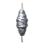
Fil di Norna · per miglioramento: 1 ×Tendine di alce, 2 × Fil di Norna - Cuocere: Fonderia del gelo da
 Colata: Copricapo dell'Evocatore
Colata: Copricapo dell'Evocatore
 Copricapo dell'orso
Copricapo dell'orso
Lascia che la rabbia primordiale di un orso possente ti consumi.
Come ottenerlo
- Fabbricare: Banco di lavoro (livello 2) da 5 × Pelle di orso, 1 × Trofeo di orso · per miglioramento: 2 × Pelle di orso
 Copricapo giallo annodato
Copricapo giallo annodato
Un copricapo giallo pratico.
Come ottenerlo
- Comprare: Hildir · 250 monete · dopo aver riportato Forziere d'argento di Hildir
 Copricapo natalizio
Copricapo natalizio
Un copricapo rosso nello stile degli gnomi domestici.
Come ottenerlo
- Comprare: Haldor · 100 monete
 Corazza a piastre di bronzo
Corazza a piastre di bronzo
Una corazza di bronzo martellato.
Come ottenerlo
- Fabbricare: Forgia da 5 × Bronzo, 2 × Pelle di cervo · per miglioramento: 3 × Bronzo
 Corazza del lupo
Corazza del lupo
Un farsetto di pelle di lupo, caldo e dall'aspetto selvaggio. Protegge dal freddo.
Come ottenerlo
- Fabbricare: Forgia (livello 2) da 20 ×
 Argento, 5 × Pelliccia di lupo, 1 ×
Argento, 5 × Pelliccia di lupo, 1 ×  Catena · per miglioramento: 5 × Argento, 2 × Pelliccia di lupo
Catena · per miglioramento: 5 × Argento, 2 × Pelliccia di lupo
 Corazza di Ask
Corazza di Ask
Il primo uomo di Midgard sapeva come proteggere i suoi organi vitali. Forse usava una corazza proprio come questa.
Come ottenerlo
- Fabbricare: Forgia nera (livello 3) da 15 × Filo di lino, 4 × Pelliccia di Lox, 10 × Pellame di cenerale · per miglioramento: 10 × Filo di lino, 2 × Pelliccia di Lox, 5 × Pellame di cenerale
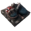
Corazza di carapaceUna corazza creata con il carapace lucidato di un insetto gigante.
Come ottenerlo
- Fabbricare: Forgia nera da 20 × Carapace, 3 × Pelle squamata, 5 × Ferro, 4 × Eitr raffinato · per miglioramento: 10 × Carapace, 1 × Pelle squamata, 2 × Eitr raffinato
 Corazza di fiammetal
Corazza di fiammetal
La fusione del misterioso fiammetal e di ossa carbonizzate rende questa corazza molto più resistente di qualsiasi altro oggetto reperibile su Midgard.
Come ottenerlo
- Fabbricare: Forgia nera (livello 3) da 20 × Fiammetal, 3 × Pellame di cenerale, 5 ×
 Osso carbonizzato, 1 ×
Osso carbonizzato, 1 ×  Cuore di Morgen · per miglioramento: 10 × Fiammetal, 1 × Pellame di cenerale
Cuore di Morgen · per miglioramento: 10 × Fiammetal, 1 × Pellame di cenerale
 Corazza imbottita
Corazza imbottita
Finemente battuta e abbastanza forte da affrontare anche le lame più affilate.
Come ottenerlo
- Fabbricare: Forgia (livello 2) da 10 × Ferro, 20 × Filo di lino · per miglioramento: 3 × Ferro, 10 × Filo di lino
 Corona della Strega
Corona della Strega
Si dice che l'anima di una strega possa conferire strani poteri ai mortali...
Come ottenerlo
- Fabbricare: Forgia nera da 5 × Orosangue, 5 × Fil di Norna, 1 ×
 Trofeo di Hexen
Trofeo di Hexen
 Corona di radici
Corona di radici
Un copricapo doloroso, ma allo stesso tempo intricato.
Come ottenerlo
- Comprare: La strega della palude · 3000 monete · dopo aver sconfitto Writhan
 Corona di Valheim
Corona di Valheim
Una ricompensa gloriosa per chi ne è davvero degno.
Come ottenerlo
- Fabbricare: Forgia nera (livello 4) da 5 × Orosangue, 1 ×
 Gioiello della corona
Gioiello della corona
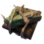
Corpetto di radiciFinemente battuta e abbastanza forte da affrontare anche le lame più affilate.
Come ottenerlo
- Fabbricare: Banco di lavoro (livello 2) da 10 ×
 Radice, 10 × Corteccia antica, 2 × Pelle di cervo · per miglioramento: 2 × Radice, 5 × Corteccia antica
Radice, 10 × Corteccia antica, 2 × Pelle di cervo · per miglioramento: 2 × Radice, 5 × Corteccia antica
 Cuore della foresta
Cuore della foresta
Pulsa con frammenti di vita antica.
Come ottenerlo
- Fabbricare: Forgia da 5 × Bronzo, 5 ×
 Seme antico, 1 ×
Seme antico, 1 ×  Trofeo dello sciamano dei nani grigi
Trofeo dello sciamano dei nani grigi
 Cuore di cristallo
Cuore di cristallo
Un frammento di dolore e disperazione congelati.
Come ottenerlo
- Fabbricare: Forgia da 5 × Argento, 5 ×
 Cristallo, 1 ×
Cristallo, 1 ×  Trofeo di golem di pietra
Trofeo di golem di pietra
 Cuore di fuoco
Cuore di fuoco
A ogni battito del cuore si sente che arde, arde di desiderio.
Come ottenerlo
- Fabbricare: Forgia nera da 5 × Fiammetal, 5 ×
 Zolfo, 1 ×
Zolfo, 1 ×  Nucleo fuso, 1 ×
Nucleo fuso, 1 ×  Trofeo di Morgen
Trofeo di Morgen
 Diadema di Dverger
Diadema di Dverger
Un fonte di luce perpetua per l'esploratore di sotterranei.
Come ottenerlo
- Comprare: Haldor · 620 monete
 Elmo del Protettore
Elmo del Protettore
Impreziosito dalle ali della vittoria.
Come ottenerlo
- Fabbricare: Forgia nera (livello 4) da 20 × Orosangue, 1 ×
 Stampo: Elmo del Protettore, 4 × Pelle di alce · per miglioramento: 15 × Orosangue, 3 × Pelle di alce
Stampo: Elmo del Protettore, 4 × Pelle di alce · per miglioramento: 15 × Orosangue, 3 × Pelle di alce - Cuocere: Fonderia del gelo da
 Colata: Elmo del Protettore
Colata: Elmo del Protettore
 Elmo di bronzo
Elmo di bronzo
Questo ti aiuterà a tenere il cervello dentro il tuo cranio.
Come ottenerlo
- Fabbricare: Forgia da 5 × Bronzo, 2 × Pelle di cervo · per miglioramento: 3 × Bronzo
 Elmo di carapace
Elmo di carapace
La gente dirà che sembri una formica gigante. Ma saranno le loro ultime parole.
Come ottenerlo
- Fabbricare: Forgia nera da 16 × Carapace, 3 × Pelle squamata, 2 × Mandibola, 4 × Eitr raffinato · per miglioramento: 8 × Carapace, 1 × Pelle squamata, 2 × Eitr raffinato
 Elmo di cuoio
Elmo di cuoio
Un cappuccio di cuoio rinforzato.
Come ottenerlo
- Fabbricare: Banco di lavoro (livello 2) da 6 × Pelle di cervo · per miglioramento: 6 × Pelle di cervo, 5 × Frammenti di ossa
Elmo di cuoio di troll
La pelle di troll è difficile da lavorare, ma permette di creare armature eccezionali.
Come ottenerlo
- Fabbricare: Banco di lavoro (livello 2) da 5 × Pelle di troll, 3 × Frammenti di ossa · per miglioramento: 2 × Pelle di troll, 1 × Frammenti di ossa
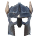
Elmo di dragoUn elmo elaborato e finemente realizzato.
Come ottenerlo
- Fabbricare: Forgia da 20 × Argento, 2 × Pelliccia di lupo, 2 ×
 Trofeo di drago · per miglioramento: 5 × Argento
Trofeo di drago · per miglioramento: 5 × Argento
 Elmo di ferro
Elmo di ferro
Un elmo di ferro lucido, adatto ad un eroe.
Come ottenerlo
- Fabbricare: Forgia da 20 × Ferro, 2 × Pelle di cervo · per miglioramento: 5 × Ferro
 Elmo di fiammetal
Elmo di fiammetal
Finché indosserai questo elmo, i nemici ci penseranno due volte prima di tentare di staccarti la testa a morsi.
Come ottenerlo
- Fabbricare: Forgia nera (livello 3) da 16 × Fiammetal, 3 × Pellame di cenerale, 2 × Osso carbonizzato, 4 × Eitr raffinato · per miglioramento: 8 × Fiammetal, 1 × Pellame di cenerale, 2 × Eitr raffinato
 Elmo di radici
Elmo di radici
La tua testa calza perfettamente tra i nodi delle radici e della corteccia.
Come ottenerlo
- Fabbricare: Banco di lavoro (livello 2) da 10 × Radice, 10 × Corteccia antica, 4 × Ritagli di cuoio · per miglioramento: 2 × Radice, 5 × Corteccia antica
 Elmo imbottito
Elmo imbottito
Un capo aderente, finemente cucito.
Come ottenerlo
- Fabbricare: Forgia da 10 × Ferro, 15 × Filo di lino · per miglioramento: 5 × Ferro, 10 × Filo di lino
 Fascia per capelli
Fascia per capelli
È un po'… umida.
Come ottenerlo
- Comprare: Hildir · 175 monete
 Forcula
Forcula
Questo antico osso ricorda la posizione di molte cose dimenticate.
Come ottenerlo
- Lasciato da: Bonemass · Palude
 Fuoco fatuo
Fuoco fatuo
Un fuoco fatuo vincolato che ti guida nella nebbia più fitta.
Come ottenerlo
- Fabbricare: Banco di lavoro da 1 × Argento, 1 ×
 Fuoco fatuo
Fuoco fatuo
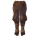
Gambali del lupoIspidi calzoni di pelle di lupo.
Come ottenerlo
- Fabbricare: Forgia (livello 2) da 20 × Argento, 5 × Pelliccia di lupo, 4 ×
 Zanna di lupo · per miglioramento: 5 × Argento, 2 × Pelliccia di lupo, 1 × Zanna di lupo
Zanna di lupo · per miglioramento: 5 × Argento, 2 × Pelliccia di lupo, 1 × Zanna di lupo
 Giacca in pelliccia Lox
Giacca in pelliccia Lox
È ancora pervasa da un intenso profumo di muschio.
Come ottenerlo
- Fabbricare: Banco di lavoro (livello 2) da 5 × Pelliccia di Lox, 8 × Frammenti di ossa, 2 × Radice · per miglioramento: 6 × Pelliccia di Lox, 4 × Frammenti di ossa, 1 × Radice
 Gonnella orso nefasto
Gonnella orso nefasto
Pelli spesse e frammenti di ossa intrecciati in una gonnella robusta.
Come ottenerlo
- Fabbricare: Forgia (livello 2) da 10 × Pelle di orso, 1 × Gabbia toracica di orso nefasto, 4 × Filo di lino · per miglioramento: 5 × Pelle di orso, 1 × Gabbia toracica di orso nefasto, 1 × Filo di lino
 Grande scudo del nord
Grande scudo del nord
I tuoi nemici non possono colpirti se non ti vedono!
Come ottenerlo
- Fabbricare: Forgia nera (livello 4) da 20 × Orosangue, 1 ×
 Stampo: Grande scudo del nord, 20 × Legna da costruzione · per miglioramento: 10 × Orosangue, 10 × Legna da costruzione
Stampo: Grande scudo del nord, 20 × Legna da costruzione · per miglioramento: 10 × Orosangue, 10 × Legna da costruzione - Cuocere: Fonderia del gelo da
 Colata: Grande scudo del nord
Colata: Grande scudo del nord
 Jörmundling
Jörmundling
Urla tormentate di agonia risuonano dalla pietra luminosa.
Come ottenerlo
- Fabbricare: Forgia nera da 5 × Fiammetal, 5 × Eitr raffinato, 1 ×
 Pietra del sangue, 1 ×
Pietra del sangue, 1 ×  Trofeo di Valchiria caduta
Trofeo di Valchiria caduta
 Mantello di cenerale
Mantello di cenerale
Questo mantello spesso trattiene il vento come la vela di una nave.
Come ottenerlo
- Fabbricare: Tavolo galdr (livello 2) da 6 × Pellame di cenerale, 2 × Tendine di Morgen · per miglioramento: 2 × Pellame di cenerale
 Mantello di lino
Mantello di lino
Un semplice mantello da viaggiatore.
Come ottenerlo
- Fabbricare: Banco di lavoro (livello 2) da 20 × Filo di lino, 1 × Argento · per miglioramento: 4 × Filo di lino
 Mantello di Lox
Mantello di Lox
Una pelliccia da una delle grandi bestie, spessa e calda.
Come ottenerlo
- Fabbricare: Banco di lavoro (livello 2) da 6 × Pelliccia di Lox, 2 × Argento · per miglioramento: 2 × Pelliccia di Lox
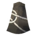
Mantello di OdinoI migliori guerrieri di Odino meritano i capi più pregiati.
Come ottenerlo
- Fabbricare: Banco di lavoro da 10 × Ritagli di cuoio, 4 × Carbone · per miglioramento: 5 × Ritagli di cuoio, 2 × Carbone
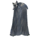
Mantello di pelliccia di lupoI lupi sono sopravvissuti naturali. Questo era semplicemente sfortunato. Ora la sua pelliccia ti scalderà nella neve.
Come ottenerlo
- Fabbricare: Banco di lavoro (livello 2) da 6 × Pelliccia di lupo, 4 × Argento, 1 ×
 Trofeo del lupo · per miglioramento: 4 × Pelliccia di lupo, 2 × Argento
Trofeo del lupo · per miglioramento: 4 × Pelliccia di lupo, 2 × Argento
 Mantello di piume
Mantello di piume
Indossare questo mantello ti fa provare una sensazione di leggerezza, come se potessi volare!
Come ottenerlo
- Fabbricare: Tavolo galdr da 10 ×
 Piume, 5 × Pelle squamata, 20 × Eitr raffinato · per miglioramento: 2 × Piume, 5 × Pelle squamata, 3 × Eitr raffinato
Piume, 5 × Pelle squamata, 20 × Eitr raffinato · per miglioramento: 2 × Piume, 5 × Pelle squamata, 3 × Eitr raffinato
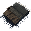
Manto di FenrisLa bestia poteva trarre profondi respiri per fare sì che il suo ululato si sentisse per tutto il suo territorio.
Come ottenerlo
- Fabbricare: Banco di lavoro (livello 2) da 20 × Pelo di Fenris, 5 × Pelliccia di lupo, 10 × Ritagli di cuoio · per miglioramento: 5 × Pelo di Fenris, 3 × Pelliccia di lupo, 4 × Ritagli di cuoio
 Marchi dell'orso
Marchi dell'orso
Se questi disegni intricati riescono a proteggere i guerrieri di terre lontane, possono sicuramente proteggere anche te.
Come ottenerlo
- Fabbricare: Banco di lavoro (livello 2) da 5 × Pelle di orso, 2 ×
 Zampa di orso, 4 ×
Zampa di orso, 4 ×  Mirtilli · per miglioramento: 2 × Pelle di orso, 1 × Mirtilli
Mirtilli · per miglioramento: 2 × Pelle di orso, 1 × Mirtilli
 Mascella orso nefasto
Mascella orso nefasto
Quando viene indossato, incute timore ai nemici e coraggio agli amici.
Come ottenerlo
- Fabbricare: Forgia (livello 2) da 5 × Pelle di orso, 1 ×
 Trofeo di orso nefasto · per miglioramento: 2 × Pelle di orso
Trofeo di orso nefasto · per miglioramento: 2 × Pelle di orso
 Megingjord
Megingjord
Dà una forza sovrumana a chi lo indossa.
Come ottenerlo
- Comprare: Haldor · 950 monete
 Orecchini pulsanti
Orecchini pulsanti
Ascoltando attentamente, è possibile sentire i deboli echi di anime magiche perdute…
Come ottenerlo
- Fabbricare: Forgia nera da 5 × Carapace, 5 × Eitr raffinato, 1 ×
 Trofeo scoria
Trofeo scoria
 Panno dell'orso
Panno dell'orso
Copre le parti più intime… ma niente più.
Come ottenerlo
- Fabbricare: Banco di lavoro (livello 2) da 5 × Pelle di orso, 4 × Mirtilli · per miglioramento: 2 × Pelle di orso, 1 × Mirtilli
 Pantaloni a piastre di bronzo
Pantaloni a piastre di bronzo
Schinieri di bronzo per proteggere le tue gambe.
Come ottenerlo
- Fabbricare: Forgia da 5 × Bronzo, 2 × Pelle di cervo · per miglioramento: 3 × Bronzo
 Pantaloni del Protettore
Pantaloni del Protettore
Stivali e pantaloni pesanti, per tenerti al caldo mentre arranchi nella neve alta.
Come ottenerlo
- Fabbricare: Forgia nera (livello 4) da 20 × Orosangue, 1 ×
 Stampo: Pantaloni del Protettore, 8 × Pelle di alce, 4 ×
Stampo: Pantaloni del Protettore, 8 × Pelle di alce, 4 ×  Cinturini in cuoio · per miglioramento: 15 × Orosangue, 3 × Pelle di alce, 3 × Cinturini in cuoio
Cinturini in cuoio · per miglioramento: 15 × Orosangue, 3 × Pelle di alce, 3 × Cinturini in cuoio - Cuocere: Fonderia del gelo da
 Colata: Pantaloni del Protettore
Colata: Pantaloni del Protettore
 Pantaloni dell'Avanguardia
Pantaloni dell'Avanguardia
Pantaloni caldi adatti al freddo. Gli stivali garantiscono un'ottima aderenza sui terreni ghiacciati.
Come ottenerlo
- Fabbricare: Forgia nera (livello 4) da 12 × Orosangue, 1 ×
 Stampo: Pantaloni dell'Avanguardia, 8 ×
Stampo: Pantaloni dell'Avanguardia, 8 ×  Ciocche di capelli di Elaking, 4 × Pelliccia di foca · per miglioramento: 6 × Orosangue, 4 × Ciocche di capelli di Elaking, 2 × Pelliccia di foca
Ciocche di capelli di Elaking, 4 × Pelliccia di foca · per miglioramento: 6 × Orosangue, 4 × Ciocche di capelli di Elaking, 2 × Pelliccia di foca - Cuocere: Fonderia del gelo da
 Colata: Pantaloni dell'Avanguardia
Colata: Pantaloni dell'Avanguardia
 Pantaloni dell'Evocatore
Pantaloni dell'Evocatore
Calzari aderenti per impedire al freddo di raggiungere la pelle.
Come ottenerlo
- Fabbricare: Tavolo galdr (livello 3) da 6 × Orosangue, 1 ×
 Stampo: Pantaloni dell'Evocatore, 6 × Pelle di alce, 5 × Fil di Norna · per miglioramento: 3 × Orosangue, 3 × Pelle di alce, 3 × Fil di Norna
Stampo: Pantaloni dell'Evocatore, 6 × Pelle di alce, 5 × Fil di Norna · per miglioramento: 3 × Orosangue, 3 × Pelle di alce, 3 × Fil di Norna - Cuocere: Fonderia del gelo da
 Colata: Pantaloni dell'Evocatore
Colata: Pantaloni dell'Evocatore
 Pantaloni di Ask
Pantaloni di Ask
Il primo uomo di Midgard preferiva camminare lentamente e andare sul sicuro. Chi indossa questi pantaloni dovrebbe imparare a fare come lui.
Come ottenerlo
- Fabbricare: Forgia nera (livello 3) da 15 × Filo di lino, 4 × Pelliccia di Lox, 10 × Pellame di cenerale · per miglioramento: 10 × Filo di lino, 2 × Pelliccia di Lox, 5 × Pellame di cenerale
 Pantaloni di cenci
Pantaloni di cenci
Un semplice rimedio alla nudità
Come ottenerlo
- Fabbricare: Banco di lavoro da 5 × Ritagli di cuoio · per miglioramento: 5 × Ritagli di cuoio
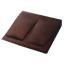
Pantaloni di cuoioStridono un pò quando cammini
Come ottenerlo
- Fabbricare: Banco di lavoro (livello 2) da 6 × Pelle di cervo · per miglioramento: 6 × Pelle di cervo, 5 × Frammenti di ossa
 Pantaloni di cuoio di troll
Pantaloni di cuoio di troll
Gambali di duro cuoio di Troll
Come ottenerlo
- Fabbricare: Banco di lavoro (livello 2) da 5 × Pelle di troll · per miglioramento: 2 × Pelle di troll
 Pantaloni di Embla
Pantaloni di Embla
Non ci è dato sapere se la prima maga abbia mai veramente indossato pantaloni come questi.
Come ottenerlo
- Fabbricare: Tavolo galdr (livello 2) da 20 × Filo di lino, 20 × Eitr raffinato, 10 × Pellame di cenerale · per miglioramento: 10 × Filo di lino, 5 × Eitr raffinato
 Pantaloni di Fenris
Pantaloni di Fenris
Le gambe della bestia erano magre e forti per fare sì che potesse fare lunghi passi.
Come ottenerlo
- Fabbricare: Banco di lavoro (livello 2) da 20 × Pelo di Fenris, 5 × Pelliccia di lupo, 10 × Ritagli di cuoio · per miglioramento: 5 × Pelo di Fenris, 3 × Pelliccia di lupo, 4 × Ritagli di cuoio
 Pantaloni di radici
Pantaloni di radici
Un' armatura leggera fatta di corteccia intrecciata da radici antiche.
Come ottenerlo
- Fabbricare: Banco di lavoro (livello 2) da 10 × Radice, 10 × Corteccia antica, 2 × Pelle di cervo · per miglioramento: 2 × Radice, 5 × Corteccia antica
 Pantaloni in pelliccia Lox
Pantaloni in pelliccia Lox
Morbidi, silenziosi e flessibili.
Come ottenerlo
- Fabbricare: Banco di lavoro (livello 2) da 5 × Pelliccia di Lox, 8 × Frammenti di ossa, 2 × Radice · per miglioramento: 3 × Pelliccia di Lox, 4 × Frammenti di ossa, 1 × Radice
 Pantaloni intrisi di eitr
Pantaloni intrisi di eitr
I pantaloni indossati dai maghi sono particolarmente stretti. La scomodità alimenta la concentrazione necessaria per usare la magia...
Come ottenerlo
- Fabbricare: Tavolo galdr da 20 × Filo di lino, 20 × Eitr raffinato, 10 × Pelle squamata · per miglioramento: 10 × Filo di lino, 5 × Eitr raffinato
 Pelle di ferro
Pelle di ferro
Una pelle indurita infusa di violenza.
Come ottenerlo
- Fabbricare: Forgia da 5 ×
 Metallo nero, 5 × Pelliccia di Lox, 1 ×
Metallo nero, 5 × Pelliccia di Lox, 1 ×  Trofeo di Lox
Trofeo di Lox
 Pettorale del Protettore
Pettorale del Protettore
Pelle, cuoio e metallo lavorano in sinergia per respingere i colpi del nemico.
Come ottenerlo
- Fabbricare: Forgia nera (livello 4) da 20 × Orosangue, 1 ×
 Stampo: Pettorale del Protettore, 8 × Pelle di alce, 4 × Cinturini in cuoio · per miglioramento: 15 × Orosangue, 3 × Pelle di alce, 3 × Cinturini in cuoio
Stampo: Pettorale del Protettore, 8 × Pelle di alce, 4 × Cinturini in cuoio · per miglioramento: 15 × Orosangue, 3 × Pelle di alce, 3 × Cinturini in cuoio - Cuocere: Fonderia del gelo da
 Colata: Pettorale del Protettore
Colata: Pettorale del Protettore
 Pettorale dell'Avanguardia
Pettorale dell'Avanguardia
Armatura in pelle realizzata con maestria, che offre un'eccellente protezione senza limitare i movimenti del guerriero.
Come ottenerlo
- Fabbricare: Forgia nera (livello 4) da 12 × Orosangue, 1 ×
 Stampo: Pettorale dell'Avanguardia, 8 × Ciocche di capelli di Elaking, 4 × Cinturini in cuoio · per miglioramento: 6 × Orosangue, 4 × Ciocche di capelli di Elaking, 2 × Cinturini in cuoio
Stampo: Pettorale dell'Avanguardia, 8 × Ciocche di capelli di Elaking, 4 × Cinturini in cuoio · per miglioramento: 6 × Orosangue, 4 × Ciocche di capelli di Elaking, 2 × Cinturini in cuoio - Cuocere: Fonderia del gelo da
 Colata: Pettorale dell'Avanguardia
Colata: Pettorale dell'Avanguardia
 Pinna del destino
Pinna del destino
Svuota la mente e l'anima, perdi la tua forma e diventa un tutt'uno con l'acqua.
Come ottenerlo
- Fabbricare: Forgia da 5 ×
 Chitina, 5 ×
Chitina, 5 ×  Scaglia di serpente, 1 ×
Scaglia di serpente, 1 ×  Trofeo del serpente
Trofeo del serpente
 Schinieri di carapace
Schinieri di carapace
Protezioni per le gambe fatte con di carapace inflessibile.
Come ottenerlo
- Fabbricare: Forgia nera da 20 × Carapace, 3 × Pelle squamata, 5 × Ferro, 4 × Eitr raffinato · per miglioramento: 10 × Carapace, 1 × Pelle squamata, 2 × Eitr raffinato
 Schinieri di ferro
Schinieri di ferro
Schinieri di ferro per proteggere le gambe.
Come ottenerlo
- Fabbricare: Forgia (livello 2) da 20 × Ferro, 2 × Pelle di cervo · per miglioramento: 5 × Ferro
 Schinieri di fiammetal
Schinieri di fiammetal
I pantaloni pesanti riparano dal freddo, mentre questi schinieri resistenti proteggono dai colpi.
Come ottenerlo
- Fabbricare: Forgia nera (livello 3) da 20 × Fiammetal, 3 × Pellame di cenerale, 5 × Osso carbonizzato · per miglioramento: 10 × Fiammetal, 1 × Pellame di cenerale
 Schinieri imbottiti
Schinieri imbottiti
Protezione per le gambe sapientemente lavorata.
Come ottenerlo
- Fabbricare: Forgia (livello 2) da 10 × Ferro, 20 × Filo di lino · per miglioramento: 3 × Ferro, 10 × Filo di lino
 Scudo a mandorla di ossa
Scudo a mandorla di ossa
Le ossa dei guerrieri caduti sono un'eccellente difesa.
Come ottenerlo
- Fabbricare: Banco di lavoro (livello 3) da 10 ×
 Legna, 10 × Frammenti di ossa, 3 ×
Legna, 10 × Frammenti di ossa, 3 ×  Trofeo scheletrico · per miglioramento: 5 × Legna, 5 × Frammenti di ossa
Trofeo scheletrico · per miglioramento: 5 × Legna, 5 × Frammenti di ossa
 Scudo d'argento
Scudo d'argento
Uno scudo di argento radioso.
Come ottenerlo
- Fabbricare: Forgia (livello 3) da 10 ×
 Legna pregiata, 8 × Argento · per miglioramento: 10 × Legna pregiata, 4 × Argento
Legna pregiata, 8 × Argento · per miglioramento: 10 × Legna pregiata, 4 × Argento
 Scudo del nord
Scudo del nord
Resta al sicuro, e fallo con stile.
Come ottenerlo
- Fabbricare: Forgia nera (livello 4) da 15 × Orosangue, 1 ×
 Stampo: Scudo del nord, 10 × Legna da costruzione · per miglioramento: 8 × Orosangue, 5 × Legna da costruzione
Stampo: Scudo del nord, 10 × Legna da costruzione · per miglioramento: 8 × Orosangue, 5 × Legna da costruzione - Cuocere: Fonderia del gelo da
 Colata: Scudo del nord
Colata: Scudo del nord
 Scudo di carapace
Scudo di carapace
Il carapace quasi impossibile da spezzare dei tuoi nemici diventa uno scudo eccellente.
Come ottenerlo
- Fabbricare: Forgia nera da 20 × Carapace, 3 × Pelle squamata, 10 × Eitr raffinato · per miglioramento: 10 × Carapace, 3 × Pelle squamata, 3 × Eitr raffinato
 Scudo di fiammetal
Scudo di fiammetal
Lo scudo è, e sempre sarà, l'arma più importante di un vichingo.
Come ottenerlo
- Fabbricare: Forgia nera (livello 3) da 10 ×
 Cenerlegno, 8 × Fiammetal, 2 × Pellame di cenerale · per miglioramento: 10 × Cenerlegno, 4 × Fiammetal, 2 × Pellame di cenerale
Cenerlegno, 8 × Fiammetal, 2 × Pellame di cenerale · per miglioramento: 10 × Cenerlegno, 4 × Fiammetal, 2 × Pellame di cenerale
 Scudo di legno
Scudo di legno
Un semplice scudo di legno
Come ottenerlo
- Fabbricare: Banco di lavoro da 10 × Legna, 4 ×
 Resina, 4 × Ritagli di cuoio · per miglioramento: 5 × Legna, 2 × Resina, 2 × Ritagli di cuoio
Resina, 4 × Ritagli di cuoio · per miglioramento: 5 × Legna, 2 × Resina, 2 × Ritagli di cuoio
 Scudo di metallo nero
Scudo di metallo nero
Forgiato dal più forte metallo in natura, è capace di affrontare anche le lame più letali.
Come ottenerlo
- Fabbricare: Forgia (livello 3) da 10 × Legna pregiata, 8 × Metallo nero, 5 × Catena · per miglioramento: 10 × Legna pregiata, 4 × Metallo nero, 2 × Catena
 Scudo di radici
Scudo di radici
Le radici malleabili sono state intrecciate fino a formare uno scudo davvero robusto.
Come ottenerlo
- Fabbricare: Banco di lavoro (livello 2) da 10 × Legna pregiata, 1 × Writhan di radici · per miglioramento: 5 × Legna pregiata, 2 × Writhan di radici
 Scudo di scaglie di serpente
Scudo di scaglie di serpente
Uno scudo resistente di scaglie sovrapposte.
Come ottenerlo
- Fabbricare: Forgia (livello 3) da 10 × Legna pregiata, 4 × Ferro, 8 × Scaglia di serpente · per miglioramento: 10 × Legna pregiata, 2 × Ferro, 4 × Scaglia di serpente
 Scudo striato
Scudo striato
Fasciato con cerchi di ferro, un vero compagno di guerriero.
Come ottenerlo
- Fabbricare: Forgia (livello 2) da 10 × Legna pregiata, 8 × Ferro · per miglioramento: 10 × Legna pregiata, 4 × Ferro
 Scudo torre di ferro
Scudo torre di ferro
Un alto scudo di ferro forte.
Come ottenerlo
- Fabbricare: Forgia (livello 2) da 15 × Legna pregiata, 10 × Ferro · per miglioramento: 10 × Legna pregiata, 5 × Ferro
 Scudo torre di fiammetal
Scudo torre di fiammetal
La miglior difesa è un'ottima difesa.
Come ottenerlo
- Fabbricare: Forgia nera (livello 3) da 15 × Cenerlegno, 10 × Fiammetal, 5 × Pellame di cenerale · per miglioramento: 10 × Cenerlegno, 4 × Fiammetal, 2 × Pellame di cenerale
 Scudo torre di legno
Scudo torre di legno
Uno scudo di legno duro ma pesante.
Come ottenerlo
- Fabbricare: Banco di lavoro da 10 × Legna, 6 × Ritagli di cuoio · per miglioramento: 5 × Legna, 3 × Ritagli di cuoio
 Scudo torre in metallo nero
Scudo torre in metallo nero
Uno scudo torre di metallo nero luccicante.
Come ottenerlo
- Fabbricare: Forgia (livello 3) da 15 × Legna pregiata, 10 × Metallo nero, 7 × Catena · per miglioramento: 10 × Legna pregiata, 4 × Metallo nero, 2 × Catena
 Spillone di ferro
Spillone di ferro
Un grazioso pezzo di equipaggiamento e di difesa.
Come ottenerlo
- Fabbricare: Forgia da 5 × Ferro, 5 × Corteccia antica, 1 ×
 Trofeo della sanguisuga
Trofeo della sanguisuga
 Tunica blu con cappa
Tunica blu con cappa
Una tunica blu con cappa.
Come ottenerlo
- Comprare: Hildir · 450 monete · dopo aver riportato Forziere d'argento di Hildir
 Tunica blu con perline
Tunica blu con perline
Una tunica blu con perline e argento.
Come ottenerlo
- Comprare: Hildir · 550 monete · dopo aver riportato Forziere di bronzo di Hildir
 Tunica del raccolto
Tunica del raccolto
Quando si lavora nei campi, è fondamentale vestirsi nel modo corretto. Una tunica più corta lascia passare l'aria.
Come ottenerlo
- Comprare: Hildir · 550 monete · dopo aver riportato Forziere d'ottone di Hildir
 Tunica dell'Evocatore
Tunica dell'Evocatore
In questa tunica è racchiusa una strana magia che la rende leggera e calda allo stesso tempo.
Come ottenerlo
- Fabbricare: Tavolo galdr (livello 4) da 6 × Pelliccia di foca, 2 × Fil di Norna, 5 × Orosangue, 15 × Eitr raffinato · per miglioramento: 3 × Pelliccia di foca, 1 × Fil di Norna, 2 × Orosangue, 5 × Eitr raffinato
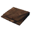
Tunica di cenciMeglio che niente
Come ottenerlo
- Fabbricare: Banco di lavoro da 5 × Ritagli di cuoio · per miglioramento: 5 × Ritagli di cuoio
 Tunica di cuoio
Tunica di cuoio
Una tunica fatta di pelli di animale
Come ottenerlo
- Fabbricare: Banco di lavoro (livello 2) da 6 × Pelle di cervo · per miglioramento: 6 × Pelle di cervo, 5 × Frammenti di ossa
 Tunica di cuoio di troll
Tunica di cuoio di troll
I troll sono difficili da scuoiare ma la loro pelle è dura e calda.
Come ottenerlo
- Fabbricare: Banco di lavoro (livello 2) da 5 × Pelle di troll · per miglioramento: 2 × Pelle di troll
 Tunica gialla con cappa
Tunica gialla con cappa
Una tunica gialla con cappa.
Come ottenerlo
- Comprare: Hildir · 450 monete · dopo aver riportato Forziere d'argento di Hildir
 Tunica gialla con perline
Tunica gialla con perline
Una tunica gialla con perline e argento.
Come ottenerlo
- Comprare: Hildir · 550 monete · dopo aver riportato Forziere di bronzo di Hildir
 Tunica in pelle di alce
Tunica in pelle di alce
Una tunica calda con raffinati dettagli in filo d'oro.
Come ottenerlo
- Fabbricare: Forgia nera (livello 4) da 6 × Pelle di alce, 2 × Tendine di alce, 5 × Orosangue · per miglioramento: 3 × Pelle di alce, 1 × Tendine di alce, 2 × Orosangue
 Tunica rossa con cappa
Tunica rossa con cappa
Una tunica rossa con cappa.
Come ottenerlo
- Comprare: Hildir · 450 monete · dopo aver riportato Forziere d'argento di Hildir
 Tunica rossa con perline
Tunica rossa con perline
Una tunica rossa con perline e bronzo.
Come ottenerlo
- Comprare: Hildir · 550 monete · dopo aver riportato Forziere di bronzo di Hildir
 Tunica semplice blu
Tunica semplice blu
Una tunica blu semplice.
Come ottenerlo
- Comprare: Hildir · 350 monete · dopo aver riportato Forziere d'ottone di Hildir
 Tunica semplice gialla
Tunica semplice gialla
Una tunica gialla semplice.
Come ottenerlo
- Comprare: Hildir · 350 monete · dopo aver riportato Forziere d'ottone di Hildir
 Tunica semplice naturale
Tunica semplice naturale
Una tunica semplice.
Come ottenerlo
- Comprare: Hildir · 250 monete
 Tunica semplice rossa
Tunica semplice rossa
Una tunica rossa semplice.
Come ottenerlo
- Comprare: Hildir · 350 monete · dopo aver riportato Forziere d'ottone di Hildir
 Velo d'ombra
Velo d'ombra
Perfetto per chi danza con la morte e schiva i colpi del nemico.
Come ottenerlo
- Fabbricare: Forgia da 5 × Metallo nero, 1 ×
 Trofeo di berserker Fuling, 10 × Filo di lino
Trofeo di berserker Fuling, 10 × Filo di lino
 Veste intrisa di eitr
Veste intrisa di eitr
Quelle vesti sapientemente disposte a strati celano in ogni piega e in ogni cucitura incantesimi e amuleti.
Come ottenerlo
- Fabbricare: Tavolo galdr da 20 × Filo di lino, 20 × Eitr raffinato, 10 × Piume, 5 × Pelle squamata · per miglioramento: 10 × Filo di lino, 5 × Eitr raffinato
 Vesti dell'Evocatore
Vesti dell'Evocatore
Abiti bordati d'oro, adatti solo ai maghi più potenti.
Come ottenerlo
- Fabbricare: Tavolo galdr (livello 3) da 6 × Orosangue, 1 ×
 Stampo: Vesti dell'Evocatore, 6 × Pelle di alce, 5 × Fil di Norna · per miglioramento: 3 × Orosangue, 3 × Pelle di alce, 3 × Fil di Norna
Stampo: Vesti dell'Evocatore, 6 × Pelle di alce, 5 × Fil di Norna · per miglioramento: 3 × Orosangue, 3 × Pelle di alce, 3 × Fil di Norna - Cuocere: Fonderia del gelo da
 Colata: Vesti dell'Evocatore
Colata: Vesti dell'Evocatore
 Vesti di Embla
Vesti di Embla
Permeate del potere della prima maga, queste vesti conferiranno dei benefici a chiunque provi a imparare l'arte della magia antica.
Come ottenerlo
- Fabbricare: Tavolo galdr (livello 2) da 20 × Filo di lino, 20 × Eitr raffinato, 10 × Pellame di cenerale, 5 × Fiammetal · per miglioramento: 10 × Filo di lino, 5 × Eitr raffinato, 2 × Fiammetal
 Vista del lupo
Vista del lupo
Una fascia per capelli ispirata alla mente acuta e furiosa di un lupo.
Come ottenerlo
- Fabbricare: Forgia da 5 × Argento, 5 × Zanna di lupo, 1 ×
 Trofeo del fenring
Trofeo del fenring